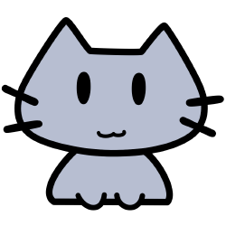

タイトル
勇!! なるかな
紹介
『勇!! なるかな』は、母の遺志をついで漫画家を目指す高校生男子の物語です

あらすじ
母を病で失った高校生の樺島勇は、母の思い出をたどるうちに、かつて漫画家をめざしたことがあることを知ります。その遺志を継いで勇も漫画を描き始めると、そこに死んだはずの母や、その師、アシスタント仲間たちが現れ、漫画の世界が具現化していきます
DATA
ジャンル
青春もの自伝的小説
視点
高校生男子一人称
文体
基本的には写実主義、後半はマジックリアリズム～スラップスティックに及ぶ展開
長さ
単行本換算で290ページ程度、４～５時間ほどで読むことができます
特徴
母の葬儀の場面から始まり、後半に行くにつれて世界観がどんどん広がっていく。筑後弁が多用されている
注意事項
魔物が出現する場面で残酷な描写があります。ただし注意書きがあり、その章はダイジェストだけを読んで飛ばすことができます
著者
井上信行
Kindle 価格
100円
リリース日
2021年 8月 19日
購入 or DOWNLOAD
Kindleのページへ